🏠 家乡介绍
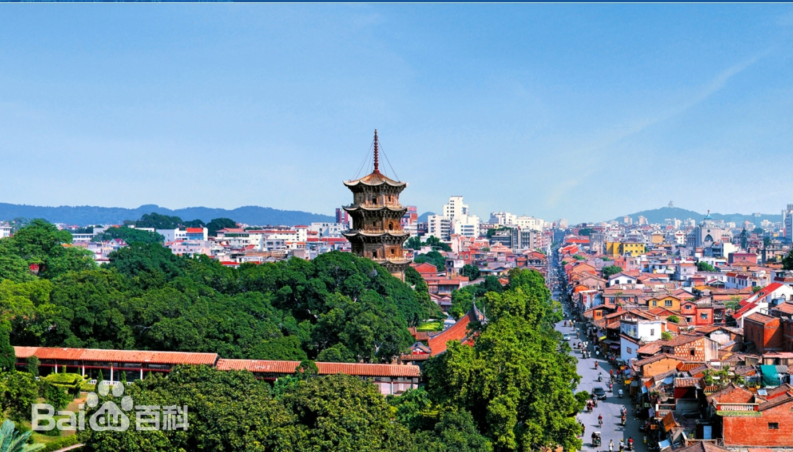
🏮 ⛩️ 🌸 🏯 ✨
📍 福建 · 泉州
半城烟火半城仙
泉州，古称刺桐城，海上丝绸之路的起点，联合国教科文组织认定的世界遗产城市。千年海交史让东西方文化在此交汇，留下了无数珍贵的文化遗产。漫步在泉州古城的青石板路上，红砖古厝的燕尾脊在夕阳下翘首向天，开元寺的钟声穿过东西塔回荡千年，清净寺的穹顶与关帝庙的香火隔街相望。南音的古韵从巷弄深处飘来，提线木偶在丝线的牵引下活灵活现，蟳埔女头戴簪花围走过蚵壳厝，每一步都踩在历史的回音里。
22世遗点
1300+年历史
6项非遗
800+万人口
🏛️ 文化遗产
⛩️
开元寺 · 千年古刹
福建省内规模最大的佛教寺院，东西双塔是泉州的城市标志。双塔高耸入云，历经千年风雨仍巍然屹立，见证了海上丝绸之路的辉煌与沧桑。每月农历廿六，勤佛日人山人海，香火鼎盛。
🕌
清净寺
中国现存最古老的伊斯兰教寺，阿拉伯建筑风格，是宋元泉州海外交通的重要史迹。
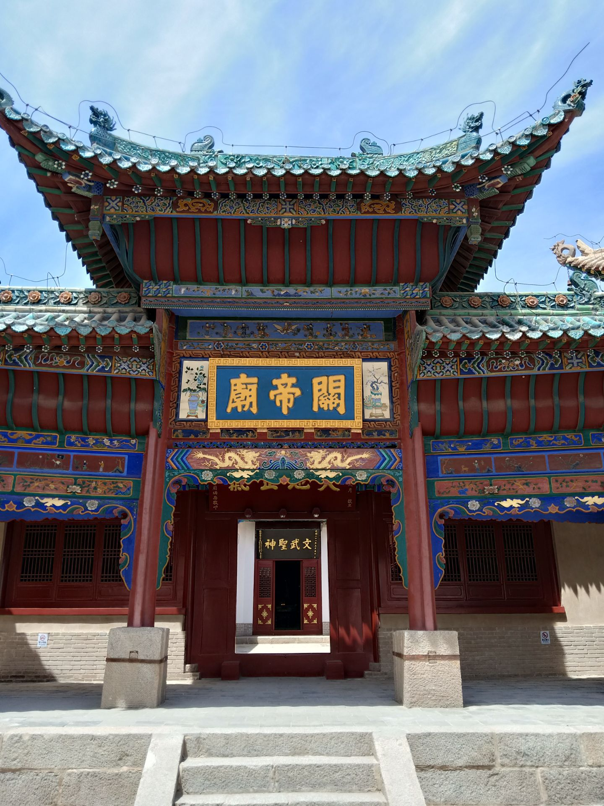
🏯关帝庙
泉州香火最旺的庙宇之一，闽南关帝信仰中心，每逢节日人山人海，夜晚灯火辉煌。
🌉
洛阳桥
中国四大古桥之一，蔡襄主持建造。首创"筏形基础"造桥法，月光下的洛阳桥美如画，是古代桥梁建筑的杰作。
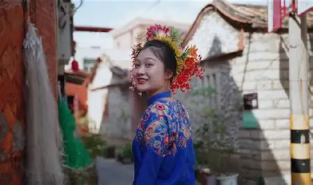
👩蟳埔女 · 簪花围
国家级非遗。蟳埔女头戴簪花围被称为"头上花园"，蚵壳厝是独特的建筑奇观。
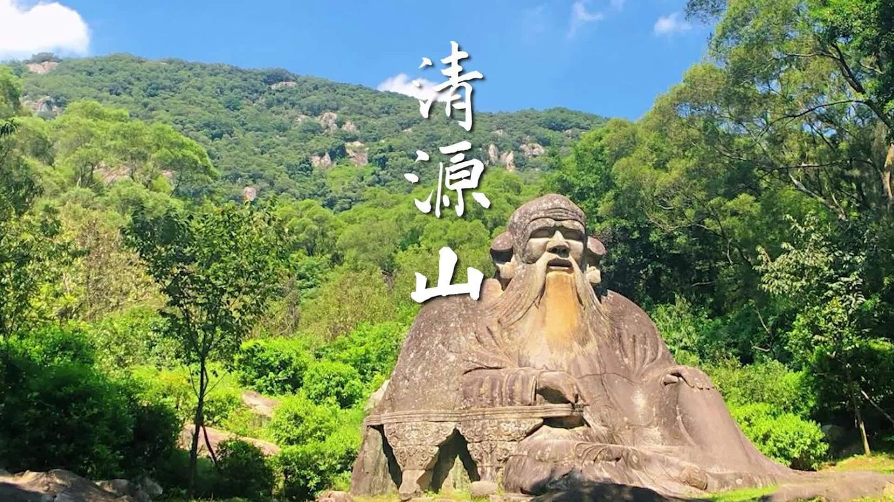
⛰️清源山 · 道教圣地
泉州母亲山，老君岩是道教石刻瑰宝。山中茶香四溢，清源洞、弥陀岩等名胜错落有致。
🍜 泉州美食
🍜
面线糊
泉州人的早餐之魂，细如发丝入口即化
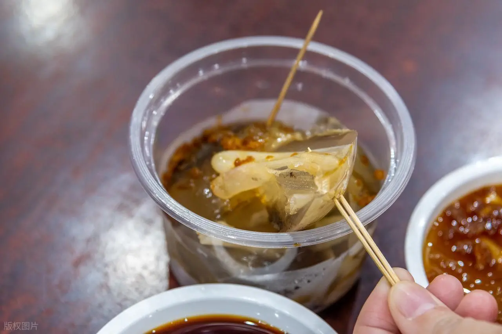
🪱土笋冻
Q弹爽口的闽南特色，蘸酱更美味
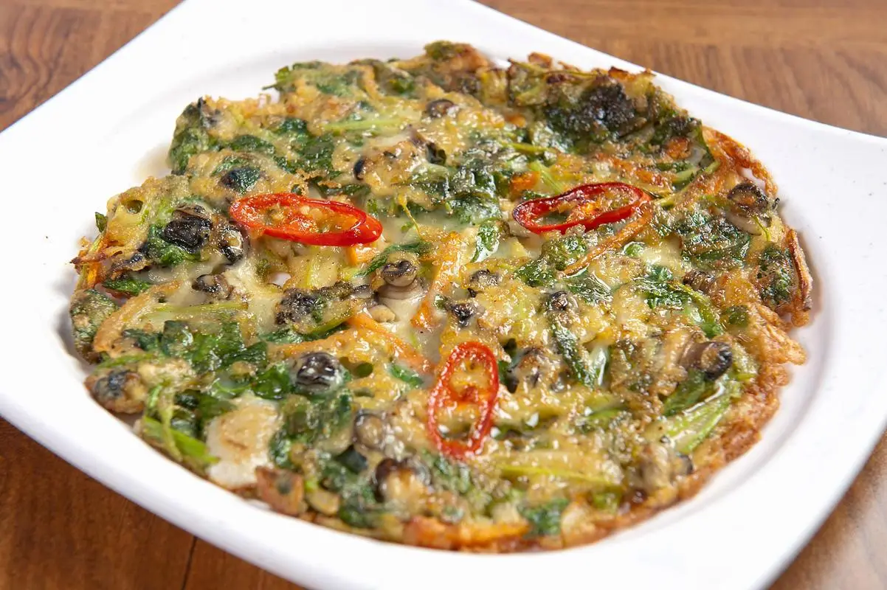
🦪海蛎煎
鲜香酥脆海味十足，配甜辣酱一绝
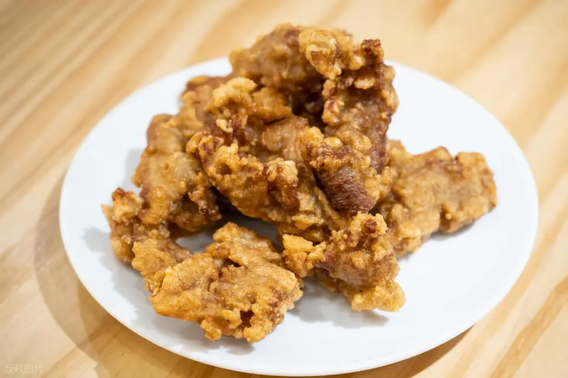
🥩醋肉
永春老醋腌制酥炸外脆里嫩，泉州人最爱的炸物
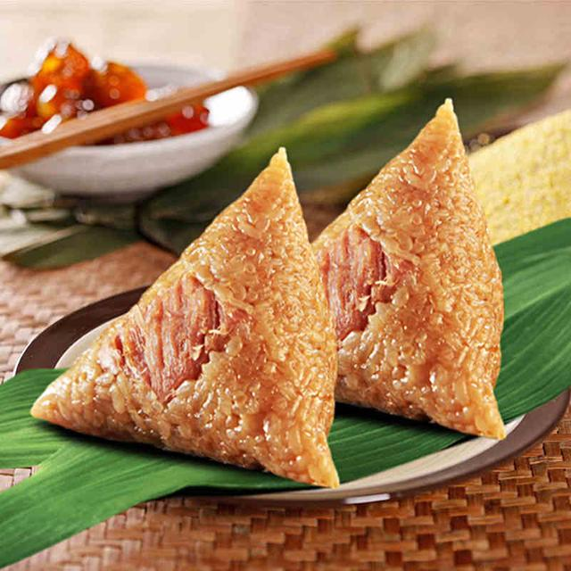
🍚肉粽
料足味美甜咸皆宜，端午必备美味
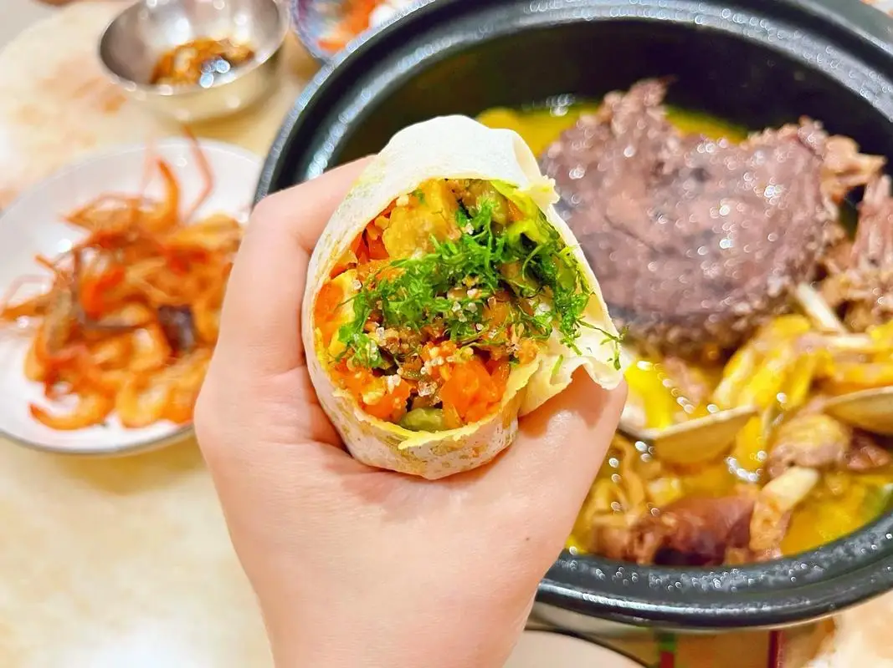
🥬润饼菜
清明时节的味觉记忆，薄饼卷万物
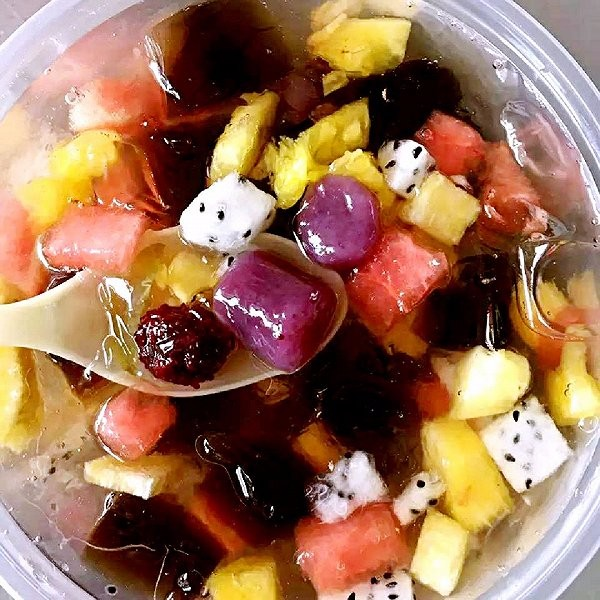
🧊四果汤
夏日消暑甜蜜良方，十几种配料任选
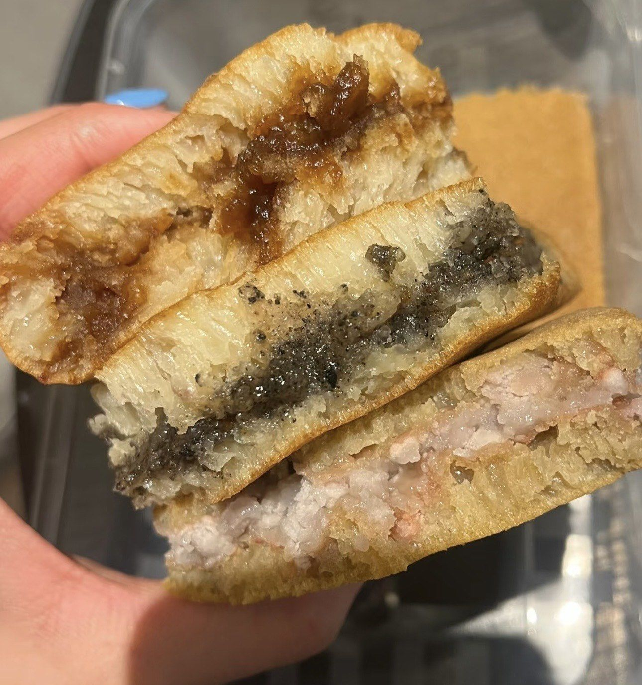
🥞满煎糕
松软香甜的古早味早点，泉州人的童年记忆
🐄
牛肉羹
手工捶打牛肉嫩滑Q弹，闽南经典汤羹
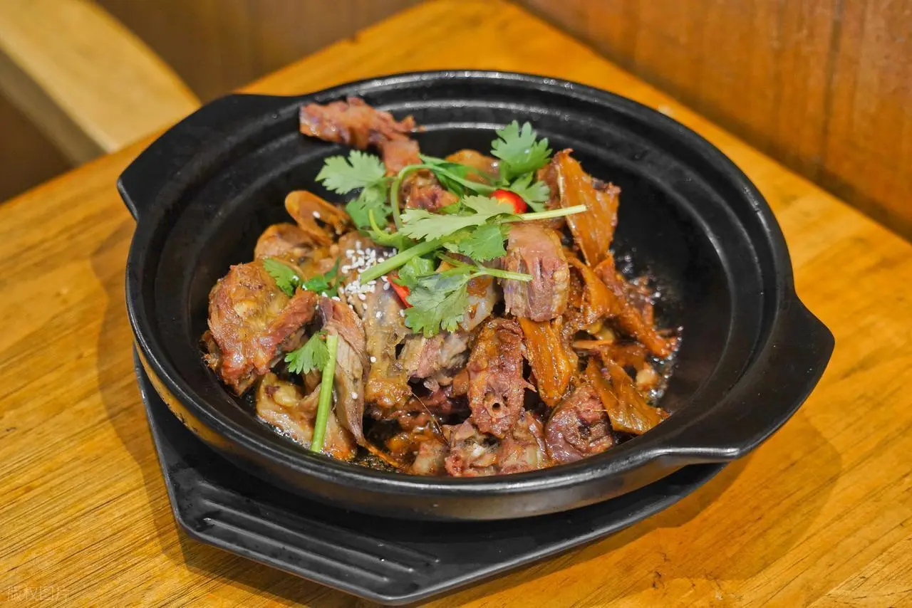
🦆姜母鸭
砂锅慢炖姜香四溢，滋补暖身泉州名菜
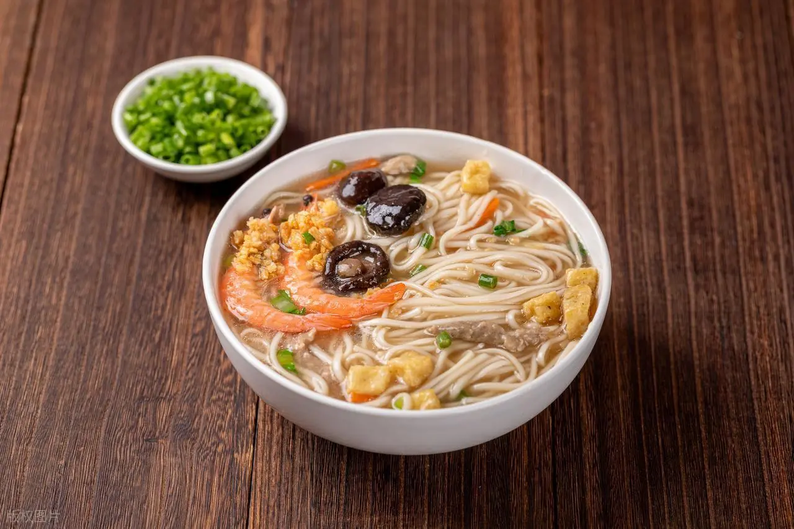
🥘泉州卤面
浓稠卤汁裹满面条，料多味足一碗满足
📸 泉州游玩日记
 🌇
🌇
2024.07.15
西街漫步 · 钟楼下的烟火气
📝 泉州日记 · 第一天
踏上泉州的石板路，空气中弥漫着面线糊的香气。西街不长，但每走一步都有惊喜——润饼菜摊、蒜蓉枝、满煎糕……嘴巴根本停不下来。钟楼是西街的灵魂，站在那里仿佛穿越了百年。
 ⛩️
⛩️
2024.07.16
开元寺 · 东西塔下的千年时光
☕ 转角咖啡馆
在西街拐角的复古咖啡馆坐下，窗外是红砖古厝的燕尾脊。点了一杯铁观音拿铁，看着来来往往的行人，时间都慢了下来。
 👩
👩
2024.07.17
蟳埔村 · 簪花围的"头上花园"
 🌉
🌉
2024.07.17
洛阳桥 · 月光下的千年古桥
🌙 夜色泉州
夜里的泉州别有韵味。关帝庙灯火辉煌，香火缭绕；中山路的骑楼在路灯下投下长长的影子。这座城市的夜晚既有古韵又有烟火气，让人来了就不想走。
🎭 闽南文化
南音
中国现存最古老的乐种之一，被誉为"中国音乐史上的活化石"。琵琶、洞箫、二弦、三弦，悠扬婉转的曲调穿越千年时光，让人沉醉在唐宋雅韵之中。
梨园戏
福建最古老的剧种之一，"宋元南戏的活化石"。科步细腻、唱腔婉转，一颦一笑间演绎悲欢离合，是中国戏曲艺术的珍贵遗产。
提线木偶
泉州提线木偶戏历史悠久，线功精妙绝伦。一根根丝线在艺人手中如同有了生命，一提一放间尽显千年传承的智慧与匠心。
红砖古厝
闽南传统建筑的灵魂，燕尾脊高高翘起指向天空，红砖墙在夕阳下泛着温暖的光。出砖入石、雕梁画栋，是泉州人心中最美的家的模样。
泉州是一座你来了就不想走的城市。这里有最暖的阳光、最鲜的海味、最古的韵味。无论走多远，泉州永远是心底最柔软的归处。